Pycharm自带了很多灵活的模板，但针对python本身的模板只有一个。这里我们将详细介绍如何针对Python类来创建模板并使用。
对于Python编程以及基本模板的使用我们这里不再赘述。关于模板的类型、缩写、变量名、以及存储的相关信息参见Live Templates；模板的使用方法参见 Creating Code Constructs by Live Templates。
2、准备工作
Pycharm版本为2.7或者更高，请大家自行安装。
3、模板的私人订制
4、创建一个根模板
打开设置对话框（单击工具栏的设置按钮，或者按Ctrl+Alt+S快捷键），在IDE Settings设置下单击Live Templates：
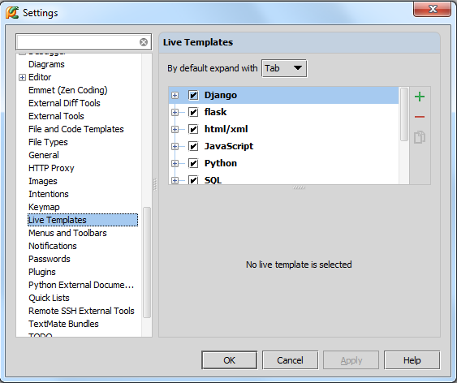
单击绿色加号，等待奇迹。
首先，注意到在user下面出现了一个新的分组。
其次，选中user组后出现一个名为<abbreviation>的根模板
最后，界面上有缩写、描述说明、模板内容等输入窗口。
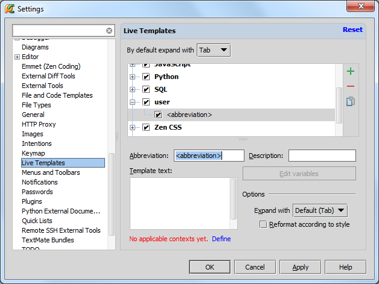
5、指定模板的缩写和上下文环境
第一步，输入模板缩写 template abbreviation，这里定义为class。然后输入描述说明description（可选），指定模板应用的上下文环境（这里选择Python）：
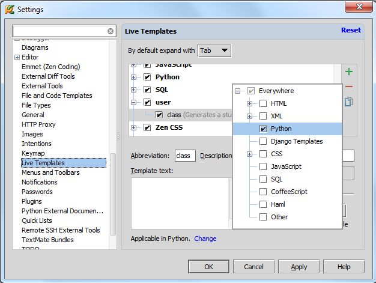
最上方expansion值选择默认的Tap即可。
6、定义模板文本
在模板文本栏中输入以下代码：
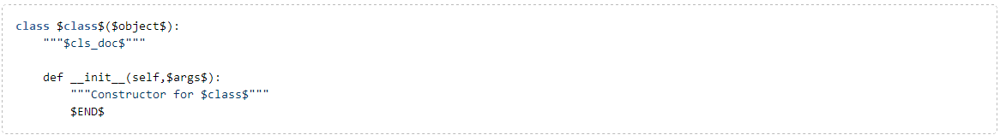
其中使用$标记包围的部分为模板变量template variables，Pycharm将其标记为红色方便我们辨认：
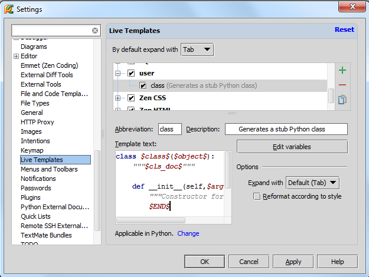
这些模板变量目前为空，接下来我们对其进行定义。
4、编辑模板变量
点击Edit variables按钮：
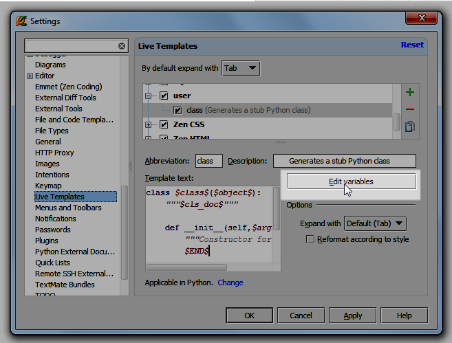
在Edit template variables对话框中显示了当前的模板变量列表：
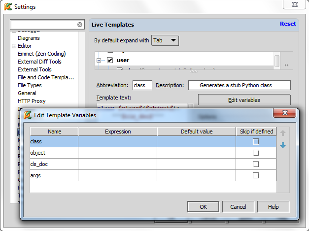
对于变量$object$，我们给出其缺省值（object），单击OK按钮：
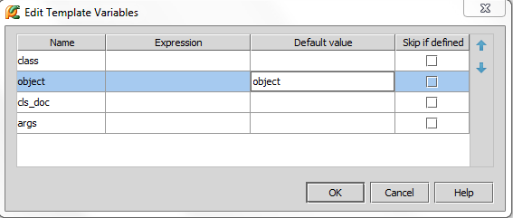
上面列表中所显示的变量并不包含 $END$，可见Pyhcarm不希望我们对其进行更改。这是因为 $END$已经进行了预定义，因此是不可编辑状态。它用来指示模板展开后输入光标的默认位置，方便我们对模板对应的代码进行完善。我们这里这个光标会默认置于类声明之后。
5、保存自定义模板
非常简单，单击设置窗口中的OK按钮即可。
6、使用自定义模板
首先，创建一个Python文件，这里命名为myPythonFile：
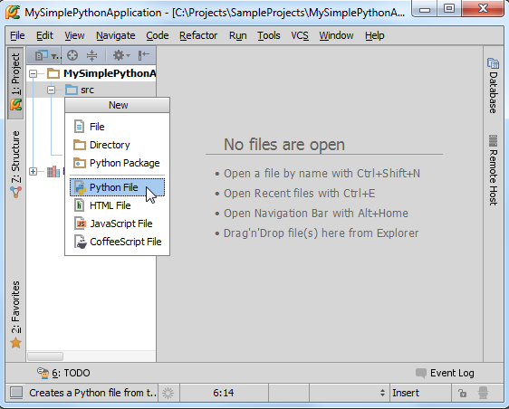
编辑这个新建的Python文件。接下来我们在其中创建一个类声明。输入模板缩写class，会发现我们自定义的模板已经出现在提示列表中了，没错，就是我们刚才定义的那个：
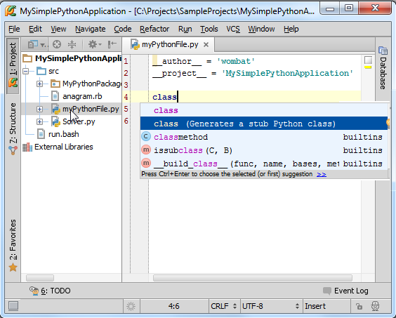
按下Tap键选择该项。
正如期望的那样，缩写名成功扩展成为了一个基本的Python类。红色下划线标记了接下来期望输入的位置，当你输入类名时（对应模板变量class），就会插入到当前红色波浪线所在位置：
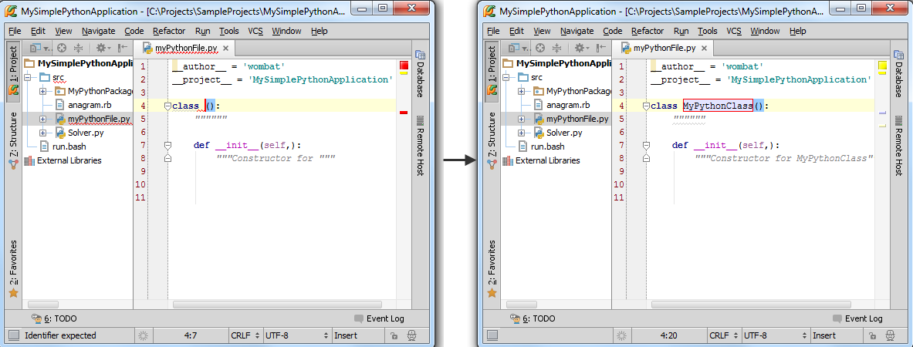
注意这里的模板变量class已经应用两次了：在类的声明语句和构造函数中。在构造函数中Pycharm对其进行了自动填充（填充为self）。
输入类名，回车，红色波浪线移动到下一行，输入对应内容，最后回车：
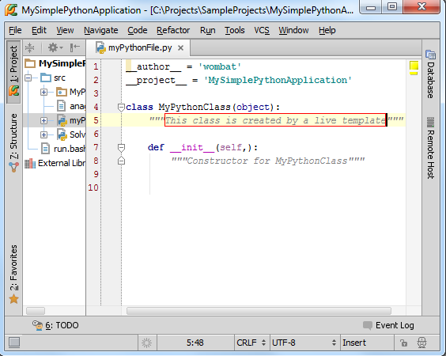
最终，光标定位在类末尾。
更多自定义模板信息参见Creating Code Constructs by Live Templates。